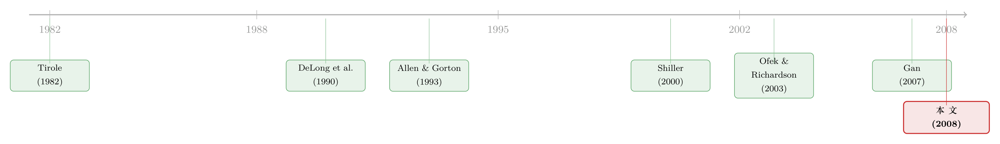

泡沫：一个我们至今定义不清、却又绕不开的词
本文读的是 Bhattacharya and Yu (2008, Review of Financial Studies)：这是一篇会议特刊的引言。两位作者借 1996–2000 年互联网泡沫，把整个泡沫研究压缩成三个问题——它是不是泡沫？什么导致了它？它重要吗？——并坦白承认，第一个问题（事前定义泡沫）几乎注定无解，而真正最该被研究、也最可能有答案的，是第三个：泡沫到底有没有真实后果。
1 一个涨了十倍、又腰斩的指数
先看一组数字。互联网股票指数（Internet Stock Index, ISDEX），一个当年被广泛引用的权威指数，从 1996 年 1 月的 100 点，一路涨到 2000 年 2 月的 1,100 点——四年涨了大约 1,000%；然后只用了四个月，到 2000 年 5 月，又跌回 600 点，跌幅约 45%。
放在整部股价史里，这样的暴涨暴跌都算得上是最惊心动魄的篇章之一。于是一个词自然而然地冒了出来：泡沫（bubble）。可问题是，这真的是一个泡沫吗？更要命的是——在一个现代金融市场里，泡沫究竟还能不能存在？
金融学当时并没有现成的答案。而这，正是 2005 年 8 月那场由印第安纳大学 Kelley 商学院与 Review of Financial Studies 合办的会议的第一个起因。本文就是那场会议的引言，作者是会议的两位组织者 Utpal Bhattacharya 与 Xiaoyun Yu。
它不是一篇有数据、有回归、有识别策略的实证论文，而是一篇「导言」。但恰恰因为它要替整个领域立题，它反而把泡沫研究里那些最尴尬、也最根本的问题，摊在了桌面上。读这样一篇文章，价值不在于记住某个系数，而在于看清一件事：我们连泡沫是什么都还没说清楚，却已经研究了它几十年。
2 先讲一个庞氏骗局的故事
文章里有一段特别精彩，值得原样转述。1999 年互联网泡沫最盛的时候，本文第一作者被当地电视台请去给公众解释什么叫泡沫。他是这样讲的：
我说服我的朋友 Elvis：你给我投 100 美元，我一个月后让它翻倍。Elvis 给了我 100 美元。下个月，我又说服了 Simon 和 Garfunkel，他们各给我 100 美元，我用这 200 美元还给 Elvis。Elvis 大为惊叹，逢人便夸。于是 John、Paul、George、Ringo 四个人又各给我 100 美元，我用这 400 美元给 Simon 和 Garfunkel 各还 200。我的名声像野火一样蔓延开来。大家都想跟我投。我从 8 个人手里拿钱，然后 16 个、32 个……当足够多的人卷进来时，我带着钱消失了。
这就是庞氏骗局（Ponzi scheme），得名于 Charles Ponzi——他在 1920 年的波士顿，用 8 个月时间卷走了 1,500 万美元。
讲这个故事，作者其实埋了一个钩子：为什么近年来庞氏骗局的数量会陡增？他给的答案只有一个词——互联网。消息传得更快了，过去靠「口口相传」（word-of-mouth）的publicity，如今变成了「鼠标一点」（click-of-mouse）。
于是一个自然的问题浮现：互联网，是不是让泡沫的形成变得更容易了？ 这个问题，把一位做媒体与 IPO 收益研究的学者（第二作者）和一位被泡沫现象吸引的学者（第一作者）牵到了一起。他们都发现，关于泡沫，不同学科里其实早就堆了一大片文献，只是从没有人把它们拢到一起，用来解释我们刚刚经历的这场市场狂热。会议，就是为此而开的。
3 三个问题，和一个尴尬的起点
会议只问了三个问题，朴素得近乎天真：
- 1996–2000 年美股的这一段，是不是一个泡沫？
- 什么导致了它？
- 它重要吗？
第一个问题又裂成两个子问题：你怎么事前（ex ante）定义泡沫？你甚至能不能事后（ex post）定义泡沫？
这个题目有多大的号召力？作者们收到了来自 26 个美国州、17 个国家、5 大洲的 106 篇论文，横跨资产定价、公司金融、市场微观结构、行为金融、国际金融、法与金融、房地产金融，还溢出到会计、经济学、心理学、社会学。经过两位项目委员会成员的双盲评审，12 篇入选会议。作者感叹：一个「泡沫」的概念，竟能把如此五花八门背景的学者聚到一起，实在令人惊叹。
但热闹归热闹，起点却是尴尬的。要回答「这是不是泡沫」，你首先得定义泡沫。而 O'Hara (2008) 在梳理了历史上各种定义尝试（一直追溯到 1720 年英国议会的《泡沫法案》）之后，给出的结论是：「即便是这一步——下定义——本身就是有问题的。」
4 定义泡沫：一个看似简单、实则无解的方程
在这期特刊里，DeMarzo、Kaniel 与 Kremer (2008) 给了一个相对严格的定义。他们说，所谓「泡沫情形」，是指同时满足以下三条：
(1) 资产的市场价格高于其预期现金流的贴现之和，其中贴现率取无风险利率； (2) 这些现金流与总体风险（aggregate risk）的相关性非负； (3) 风险厌恶的投资者在明知 (1) 和 (2) 的前提下，仍然理性地选择持有该资产。
条件 (1) 翻译成符号，就是这样一个不等式（这是他们对泡沫的核心刻画）：
$$ P_0 > \sum_{t=1}^{\infty} \frac{E[CF_t]}{(1+r_f)^t} $$
请注意这里的玄机：贴现率用的是无风险利率 \(r_f\)，而不是包含风险溢价的折现率。这其实是把「基本价值」（fundamental value）的上限算到了顶——因为对一个现金流与总体风险正相关的资产，理性投资者要求的折现率本该高于 \(r_f\)，从而基本价值本该更低。即便用这么宽松的（高估了基本价值的）标准，价格依然超过它，那才叫泡沫。
真正巧妙、也最反直觉的，是第三条。它说的是：理性的、风险厌恶的人，在知道这是泡沫的情况下，仍然愿意持有。这听上去自相矛盾——既然知道是泡沫，为什么不卖、不做空？
DeMarzo、Kaniel 与 Kremer 的答案是「相对财富关切」（relative wealth concerns）。一个朴素的逻辑是：如果理性的人能够无风险地套利，泡沫一定会破。但如果理性的人在乎的是自己相对于同侪的财富，那么他可能就不愿意逆着人群下注——大家都买的资产，他也得买，哪怕他清楚那是泡沫。因为一旦泡沫继续涨而他踏空了，他在同侪中的相对财富就会塌方。这篇论文给这种处境起了一个很传神的名字：「独自站着的风险」（the risk of standing alone）。
于是「泡沫为什么不会被理性套利者立刻打爆」这个老问题，被换了一种说法：不是套利者看不见，而是他们不敢、也不愿独自站出来。
这里值得停一下。条件 (3) 把泡沫从「非理性的疯狂」重新定义成了「理性人之间的某种均衡」。这其实是泡沫研究里一条非常深的暗线——从 Tirole (1982) 在理性预期框架下追问「投机到底可不可能」，到后来一整批关于套利限制、异质信念的工作，大家都在试图回答同一个问题：为什么聪明钱没有把价格拉回基本面？
5 是谁吹出了泡沫？四篇论文的四个嫌疑人
承认了「我们还不知道怎么判断价格是不是泡沫」之后，作者很务实地说：如果我们能暂时跟这个未解之谜共处，那么实用主义者仍然可以往下走，去追问是什么导致了这场所谓的互联网泡沫。特刊里的几篇论文，各自指认了一个嫌疑人。
第一个嫌疑人：相对财富关切。 就是上面 DeMarzo–Kaniel–Kremer 的机制。但作者紧接着提了一连串尖锐的问题：相对财富关切真的是 1990 年代互联网泡沫的成因吗？互联网公司的市值，相对于整个市场，真的大到足以引发这种关切吗？如果是，为什么这种关切不是时时刻刻都在制造泡沫？这些追问，恰恰暴露了「机制讲得通」和「机制真的发生了」之间的鸿沟。
第二个嫌疑人：羊群与激励。 Dass、Massa 与 Patgiri (2008) 盯住的是「羊群行为」（herding）。他们的论点很巧：泡沫由交易者的羊群行为造成，而交易者羊不羊群，取决于激励。声誉关切会驱动羊群；而共同基金经理的另一重羊群动机，是他们的考核建立在相对其他经理人的业绩之上。反过来说，如果改用绝对业绩（比如利润）来考核，羊群就能被抑制。他们的证据正与理论一致：那些绩效合约更偏向「按绝对业绩高薪激励」的基金经理，羊群行为更少。
第三个嫌疑人：分析师。 Bradley、Jordan 与 Ritter (2008) 把矛头转向被舆论、监管者和不少学者都点过名的股票分析师。先前的文献暗示：与承销商有银行业务关系的分析师，给出的推荐过于「玫瑰色」。但这三位作者发现，一旦把分析师推荐的时点考虑进去，市场其实并没有对这些推荐打折；而分析师覆盖度的增加，只局限于小型 IPO，且只发生在更早的「静默期」。合在一起，结论反而是个反转：如果存在利益冲突，那它在「关联」和「非关联」分析师身上都存在——因此分析师的「关联」本身，不大可能是泡沫的成因。
关于这一篇，本博客有一篇专门的细读，见《上市之后，分析师的「彩虹屁」到底值不值钱？——泡沫年代的一份证据》。
第四个嫌疑人：货币幻觉。 Brunnermeier 与 Julliard (2008) 把目光投向另一个市场——房地产。他们提出「货币幻觉」（money illusion）能给房地产泡沫添柴：世纪之交通胀下行、名义利率走低，潜在购房者误把名义利率的下降当成了实际利率的下降，于是把房价越抬越高。聪明钱又无法通过套利把价格拉回基本面，因为房市的卖空约束（short-selling constraints）尤其严重。他们先从理论上推出房产的「错误定价成分」（price-rent 比里无法被基本面解释的那一块），再在实证上估计它，结果发现它与通胀高度相关。
四个嫌疑人，四种机制：相对财富、激励扭曲、分析师、货币幻觉。但你会发现——它们更像是「讲得通的故事」，而不是「被钉死的因果」。这正是泡沫成因研究最难的地方：连「是不是泡沫」都没定论，「什么导致了泡沫」更像是在空中楼阁上加盖。
6 但真正关键的一步：泡沫，到底重要吗？
如果说前两个问题让人沮丧，那么第三个问题——泡沫重要吗——才是这篇引言真正想把读者引向的地方。作者说得很直白：这在他们看来，是最重要的问题。
为什么？因为它直接关系到政策。泡沫到底只是金融市场参与者之间的一场零和游戏，还是会对投资、消费、就业产生真实的影响？如果有真实影响，怎么度量？如果影响显著，政策制定者该做什么？而如果泡沫的真实影响微不足道，那么我们就不该去要求央行在泡沫变大、破裂之前先把它戳破。
特刊里，Gan (2007) 正面回答了这个问题。她用了一个漂亮的自然实验：1990 年代初日本地价 50% 的崩塌。这个戏剧性的下跌，砸掉的是银行手里抵押品的价值，而不是由企业自身经营恶化引起的——所以任何「企业业绩」与「银行的房地产敞口」之间的相关性，都只能解读为后者对前者的影响（而非反过来）。这是识别上的关键一招：把因果方向钉死。
她发现了什么？在单笔贷款层面，房地产敞口越大的银行，越是收缩放贷；在单个企业层面，企业的固定投资和市场估值，都与它主办银行的房地产敞口负相关；而且，一家向多个银行借款的企业，会从那些房地产敞口更大的银行那里拿到更少的资金。这条「贷款渠道」（lending channel）在经济上相当显著：房地产泡沫的破裂，可以解释 1/3 的贷款收缩、1/5 的企业固定投资下降、以及 1/4 的企业市场估值下跌。
一句话：泡沫是重要的（Bubbles matter）。
注意这里有一个微妙的逻辑递进：我们没法事前定义泡沫，也没法干净地指认泡沫的成因，但我们可以——绕过这两个难题——直接度量「资产价格的剧烈波动」对实体经济的冲击。Gan 用的甚至不是「泡沫」二字，而是房地产价格的崩塌。换句话说，第三个问题之所以最可答，恰恰因为它不需要先回答前两个。
7 那些悬而未决的问题
文章的后半段，作者老老实实地把没解决的问题一条条摆了出来，这部分读起来格外坦诚。
第一，我们能在泡沫发生时识别它吗？ Brunnermeier (2007) 在《新帕尔格雷夫经济学词典》里给了一个流行定义：「当价格超过资产的基本价值时，泡沫就出现了。」唯一的麻烦是——没人能就「基本价值是什么」达成一致。因为基本价值是预期现金流和折现率的函数，而这两者都不可观测，甚至事后也不可观测。这就是为什么互联网股票暴涨暴跌 7 年之后，「到底有没有泡沫」的争论仍未平息。
作者给了一个很务实的判断：事前永远不会有共识——如果有共识，就不会有泡沫了。但事后也许能达成更多共识。一条由 Ofek 与 Richardson (2003) 开启的有希望的路线是：去找基本价值的一个合理上界。如果价格高于这样一个贴现值——其中现金流取该行业里任何一家公司曾经达到过的最高水平，而折现率取最低可能值（无风险利率，甚至零）——那么这个价格，几乎可以肯定是泡沫。
第二，是什么导致了泡沫？ 是投资者、经理人、财务顾问、政府政策、媒体、学者，还是火星人？Shiller (2000) 在《非理性繁荣》里一口气提了 12 个推动互联网泡沫的因素：资本主义的爆发与「所有权社会」、有利于商业成功的文化与政治变迁、新信息技术、宽松货币政策与「格林斯潘看跌期权」、婴儿潮一代、商业新闻报道的扩张、分析师乐观预测、缴费确定型养老金计划的扩张、共同基金的增长、通胀下行与货币幻觉、折扣经纪商与日内交易者带来的交易量扩张、以及赌博机会的兴起。先前文献给出的解释还包括：噪声交易者带来的套利限制（DeLong et al., 1990）、同步风险（Abreu and Brunnermeier, 2002, 2003）、卖空约束、缺乏对冲的近似替代品、异质信念（Scheinkman and Xiong, 2003）、缺乏高阶共同知识（Allen, Morris, and Postlewaite, 1993）、委托投资（Allen and Gorton, 1993）、以及心理偏差。作者的看法是：网撒得还要更宽——一条有希望的方向（如 Dass、Massa 与 Patgiri, 2008 所示），是去聚焦代理成本，尤其是货币激励，看它们究竟是放大还是抑制了泡沫。
第三，泡沫的福利效应是什么？ 人们往往默认泡沫是坏的。但它会不会反而提升社会福利？新兴产业的创新，是不是需要一点「动物精神」（animal spirits）和过度投资？这一块，作者说，还需要远多于现有的研究。
文章的最后一句意味深长：在所有关于泡沫的问题里，也许没有哪个比「泡沫一开始究竟为什么会出现」更重要。
写下这些文字时是 2008 年初。脚注里作者引了花旗 CEO Chuck Prince 2007 年 7 月对《金融时报》说的那句名言：「只要音乐还在放，我们就接着跳舞。」他当时相信派对终会散场，但流动性如此充裕，不至于被美国次贷市场的动荡打断。结果——「派对几周后就结束了。」这篇为互联网泡沫立题的引言，正站在下一场更大危机的门槛上。
8 文献脉络
把这条线索拉直来看，泡沫研究其实一直在围着同一个核心打转：为什么理性的聪明钱，没有把价格拉回基本面？
最早把这个问题问得最干净的，是 Tirole (1982)——他在理性预期的框架下追问，投机到底可不可能存在。接着，DeLong、Shleifer、Summers 与 Waldmann (1990) 给出了一种答案：噪声交易者的存在本身，就构成了套利者要承担的风险，于是套利是有限的。再往后，Allen 与 Gorton (1993) 从委托投资的角度，说明「搅动型泡沫」（churning bubbles）如何在代理关系中滋生。
然后，是世纪之交那场真实的狂热把所有这些理论逼到了台前。Shiller (2000) 的《非理性繁荣》几乎成了泡沫的代名词；Abreu 与 Brunnermeier (2003) 用「同步风险」解释了为什么理性套利者会故意延迟而非立刻攻击泡沫；Ofek 与 Richardson (2003) 则用「网络股的兴衰」给出了一个可操作的事后判别思路。

而 Gan (2007) 把整条线索引向了一个新的、也更可答的方向——不纠缠于定义，直接度量泡沫破裂的真实后果。Bhattacharya 与 Yu (2008) 这篇引言，正是站在这个十字路口上：它一边总结了「成因派」的诸多尝试，一边把聚光灯打到了「后果派」身上，并断言后者才是最重要的问题。
（关于「泡沫如何扭曲资源配置」这条后果派的暗线，本博客另有两篇可参看：《泡沫里，市场给创新贴错了两次价签》，以及讨论政策该不该提前出手的《泡沫破灭之前，央行该不该出手？》。）
9 评论与延伸（Q&A + 研究方向）
(a) 几个可能的疑问
Q：这篇文章既然只是会议引言，没有自己的数据和回归，值得认真读吗？
值得，但要带着正确的预期去读。它的价值不在「发现」，而在「立题」。它把一个庞杂领域里最尴尬的三个问题（能不能定义、什么成因、有没有后果）摊开，并明确指出哪个最可答、最该做。对刚进入这个领域的人，这种「地图」比单篇实证更有用。
Q：DeMarzo–Kaniel–Kremer 的泡沫定义，和教科书里「价格偏离基本面」有什么本质区别？
关键在第三条：风险厌恶的理性人明知是泡沫仍持有。教科书定义把泡沫归因于「有人算错了」；DKK 的定义则说，即使所有人都算对了、都知道是泡沫，泡沫也能作为一种均衡存在——因为「独自站着的风险」让逆向下注变得不划算。这把泡沫从「非理性故事」搬进了「理性均衡故事」。
Q：条件 (1) 为什么要用无风险利率而不是风险调整后的折现率来贴现？这会不会高估了泡沫的判定门槛？
恰恰相反，它是在收紧判定。对一个现金流与总体风险正相关的资产，理性折现率应高于无风险利率，故基本价值应更低。用无风险利率贴现，等于给基本价值算了一个偏高的上界。如果价格连这个被高估的基本价值都超过了，那它是泡沫的证据就更硬。Ofek–Richardson 取「行业最高现金流 + 最低折现率」的上界思路，是同一种保守逻辑。
Q：Gan (2007) 凭什么能把因果方向钉死？
靠日本地价
50%崩塌这个外生冲击。这个下跌砸的是银行抵押品价值，并非由企业经营恶化引起。所以「企业业绩」与「银行房地产敞口」之间一旦出现相关，只能解读为后者影响前者，而非反向。这就避开了「是企业自己不行才借不到钱」的反向因果，是这套识别最干净的一步。
Q：四个「成因」嫌疑人，哪个的证据最可信？
单看识别强度，Bradley–Jordan–Ritter 的分析师那篇反而最扎实——因为它做的是「证伪」：在控制了推荐时点后，分析师关联不再显著，从而把「关联分析师是成因」这个流行假说推翻了。相对财富、货币幻觉这些机制更偏「讲得通」，离「被钉死」还有距离。这也是泡沫成因研究的通病：故事很多，干净的反事实很少。
Q：作者反复强调「泡沫重要吗」是最重要的问题，这个判断对今天还成立吗？
我认为更成立了。2008 之后，「央行该不该对资产价格做出反应」成了宏观金融的核心争论，而这场争论的前提，正是泡沫有没有显著的真实后果。Gan 那条「贷款渠道」后来在大量危机研究里被反复验证和扩展。能绕开「定义」难题、直接度量后果的研究，正是这个领域里最有累积性的部分。
(b) 几个可能的研究问题与提案
1. 信用市场里的「独自站着的风险」
【经济故事】DKK 的相对财富关切是用股票讲的，但债券基金经理的考核同样高度相对化（相对基准、相对同类）。当某一类信用债被市场追捧、利差被压到不合理的薄时，理性的基金经理是否也因为「不敢踏空」而被迫跟买，从而吹大了信用利差的「泡沫」？ 【可行性】中。需要债券基金持仓（如 Morningstar / eMAXX）、基金合约的考核条款，以及 TRACE 的利差数据。识别难点在于把「相对考核强度」工具化——Dass–Massa–Patgiri 用绝对业绩合约做对照的思路可以借鉴。doable，但合约层面的激励数据不易获得。
2. 外资持有人是泡沫的放大器还是稳定器？
【经济故事】互联网泡沫期间，跨境资本大举涌入。外资持有人究竟更容易追涨杀跌（放大泡沫），还是因信息劣势而更被动（无意中稳定价格）？这与本博客那篇《外资真是「蝗虫」吗？》的关切一脉相承。 【可行性】中。需要跨国的外资持股数据（如 TIC、各国托管数据）与可投资度（investability）变化作为外生冲击。识别可借「指数纳入」或「市场开放」这类准自然实验。数据可得性因国而异。
3. 泡沫破裂的「贷款渠道」在公司债市场是否同样存在？
【经济故事】Gan 讲的是银行抵押品价值崩塌如何传导到企业投资。一个自然的延伸：当某类抵押品（比如商业地产）价格崩塌，重度依赖该抵押品的企业，其公司债一级发行和二级流动性会不会同步收缩？这把「贷款渠道」从银行信贷搬到了直接债务市场。 【可行性】高。Mergent FISD（发行）+ TRACE（成交/流动性）+ 企业抵押品构成，识别可用区域性地产冲击。这是本博客流动性主线（如《差点死掉的那个市场》）的自然续作，doable。
4. 「事后上界」判别法的样本外检验
【经济故事】Ofek–Richardson 的「行业最高现金流 + 最低折现率」上界，是一个可操作的事后泡沫判据。它在互联网泡沫上讲得通，但在别的泡沫（如房地产、加密资产）上，这个上界判别出来的「泡沫」，事后真的都崩了吗？误报率有多高？ 【可行性】高。只需各资产类别的现金流（或类现金流）数据和价格序列，构造上界并回测崩盘。纯实证，无需复杂识别，适合作为一篇方法检验型论文。
5. 泡沫的福利效应：过度投资是浪费还是「必要的试错」？
【经济故事】作者明确点出这是块空白——泡沫期的过度投资，可能为新兴产业提供了创新所需的「动物精神」。能不能比较泡沫期被「过度融资」的创新型企业，与正常期同类企业的长期专利产出与生产率？ 【可行性】低到中。需要把「泡沫驱动的融资」与「基本面驱动的融资」分开，这本身就是识别难题；专利与生产率的长期追踪也受幸存者偏差困扰。机制有趣，但干净识别很难，诚实地说，doable 程度有限。
10 我的判断
先说贡献。这篇引言的价值，在于它把一个看似已经被研究透了的概念，重新摊回到了它最不堪的起点：我们连泡沫是什么都没说清楚。 它没有用华丽的辞藻掩盖这一点，反而把「事前不可定义、成因难以钉死、唯有后果可度量」这条逻辑讲得清清楚楚，并旗帜鲜明地把研究的重心推向「后果」与「福利」。对一个领域来说，能诚实地承认自己的无能为力、并指出最该使劲的方向，本身就是一种贡献。
再说担忧。作为引言，它对各篇论文的「成因」结论转述得有点过于平和——四个嫌疑人并排站着，读者很难分辨哪个的识别真正站得住。事实上，正如前面所说，只有 Bradley–Jordan–Ritter 那篇做的是干净的「证伪」，其余更接近「机制示范」。把这些放在同一句「这些论文提供了一些答案」里，容易让读者高估了「成因派」的确定性。此外，DKK 定义里第三条虽然优雅，但「相对财富关切的强度」在实证上极难度量——这也是为什么直到今天，「事前识别泡沫」依然是空话。
最后说我想看到的。我最想看到的，仍是顺着 Gan 那条路走下去的工作：不纠缠于「是不是泡沫」，而是把资产价格的剧烈波动当成一个外生冲击，干净地度量它对信贷、投资、就业、乃至创新的真实传导。 把这条「后果派」的链条从银行信贷延伸到公司债与影子银行，从一国延伸到跨境资本，是这个领域最有累积性、也最可能影响政策的方向。至于「泡沫一开始为什么会出现」——作者说它也许是最重要的问题，我同意；但我也怀疑，它会是最后一个被回答的。
参考文献
- Abreu, D., and M. Brunnermeier. 2002. Synchronization Risk and Delayed Arbitrage. Journal of Financial Economics 66, 341–360.
- Abreu, D., and M. Brunnermeier. 2003. Bubbles and Crashes. Econometrica 71, 173–204.
- Allen, F., and G. Gorton. 1993. Churning Bubbles. Review of Economic Studies 60, 813–836.
- Allen, F., S. Morris, and A. Postlewaite. 1993. Finite Bubbles with Short-Sale Constraints and Asymmetric Information. Journal of Economic Theory 61, 206–229.
- Bhattacharya, U., and X. Yu. 2008. The Causes and Consequences of Recent Financial Market Bubbles: An Introduction. Review of Financial Studies 21(1), 3–10.
- Bradley, D., B. Jordan, and J. Ritter. 2008. Analyst Behavior Following IPOs: The Bubble Period Evidence. Review of Financial Studies.
- Brunnermeier, M. 2007. Bubbles. In L. Blume and S. Durlauf (eds.), The New Palgrave Dictionary of Economics. New York: Oxford University Press.
- Brunnermeier, M., and C. Julliard. 2008. Money Illusion and Housing Frenzies. Review of Financial Studies.
- DeLong, B., A. Shleifer, L. Summers, and R. Waldmann. 1990. Noise Trader Risk in Financial Markets. Journal of Political Economy 98, 703–738.
- DeMarzo, P., R. Kaniel, and I. Kremer. 2008. Relative Wealth Concerns and Financial Bubbles. Review of Financial Studies.
- Dass, N., M. Massa, and R. Patgiri. 2008. Mutual Funds and Bubbles: The Surprising Role of Contractual Incentives. Review of Financial Studies.
- Gan, J. 2007. The Real Effects of Asset Market Bubbles: Loan and Firm-Level Evidence of a Lending Channel. Review of Financial Studies 20, 1941–1973.
- O'Hara, M. 2008. Bubbles: Some Perspectives (and Loose Talk) from History. Review of Financial Studies.
- Ofek, E., and M. Richardson. 2003. DotCom Mania: The Rise and Fall of Internet Stock Prices. Journal of Finance 58, 1113–1137.
- Povel, P., R. Singh, and A. Winton. 2007. Booms, Busts, and Fraud. Review of Financial Studies 20, 1219–1254.
- Scheinkman, J., and W. Xiong. 2003. Overconfidence and Speculative Bubbles. Journal of Political Economy 111, 1183–1219.
- Shiller, R. 2000. Irrational Exuberance. Princeton, NJ: Princeton University Press.
- Tirole, J. 1982. On the Possibility of Speculation under Rational Expectations. Econometrica 50, 1163–1182.